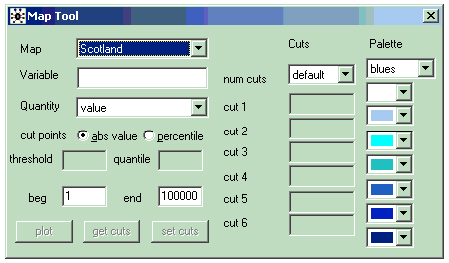
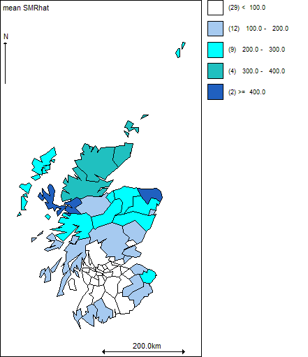

Creating maps
Producing maps
Note: in order to produce a map of the mean or other summary statistic of the posterior distribution of a stochastic variable, you must have already set a samples or summary monitor for that parameter and have carried out some updates.
To produce a map:
* Select the
Mapping Tool option from the
Map menu.

* Select the name of the map you wish to draw from the pull-down menu labelled
Map.
* Type the name of the variable to be mapped in the white box labelled
Variable.
* If the variable is data (e.g. the raw SMR, expected counts E, or a covariate) pick the
value option in the pull down menu labelled
Quantity and then click the
plot button: a map shaded according to the values of the variable will now appear.
* If the variable is a stochastic quantity (e.g. the relative risks) there are various options which you can select from the
Quantity menu:
- if you have monitored the variable by setting a summary monitor, then you must select the
mean(summary) option from this menu, as only the posterior means are stored by the summary monitor;
- if you have monitored the variable by setting a samples monitor (which stores the full posterior sample), you can select any of the remaining options from the Quantity menu:
mean(sample) will map the posterior means of the variable;
percentile will plot posterior quantiles of the variable - if you select this option, you must then type the required percentile in the box labelled quantile;
prob greater will map the posterior probability that the value of the variable is greater than or equal to the specified threshold, which you must type in the box labelled threshold;
prob less will map the posterior probability that the value of the variable is less than or equal to the specified threshold, which you must type in the box labelled threshold;
When you have selected the quantity you want to map, click the
plot button to display the map.
* The numbers in brackets shown on the map legend give the number of areas classified in each category on the map.
Fig 1. GeoBUGS map of SMRs for Scottish Lip Cancer data

User-specified cut-points and shading
GeoBUGS can work with two kinds of cut-points: absolute value cut-points and percentile cut-points. For absolute cut-points, GeoBUGS chooses a default set of breaks based on the absolute value of the variable to be mapped: these are chosen to give equally spaced intervals. For percentile cutpoints, GeoBUGS chooses the 10th, 50th and 90th percentiles of the empirical distribution of the variable to be mapped. The default shading is blue-scale.
To edit the colours for shading the map:
* Select the
custom option from the
Palette menu in the top right of the
Map Tool.
* Clicking with the left mouse button on the arrow by each colour will bring up a menu of alternative colours that can be selected.
* After you have selected the new colour scheme, click on the
set cuts button to "refresh" the currently selected map or click on the
plot button to produce a new map.
* To reset the colour scheme to blue shades, select
blues from the Palette menu and click on the set
cuts button again.
To edit the absolute value cutpoints:
* Select the required number of cutpoints (a maximum of 6 cutpoints is currently allowed) from the menu labelled
num cuts under the
Cuts menu.
* Type the required values of the cutpoints in the appropriate boxes labelled cut 1, cut 2 etc.
* Click on the
set cuts button to "refresh" the currently selected map or click on the
plot button to produce a new map.
To produce maps using cutpoints based on percentiles:
* Select the
percentile option rather than
abs value option for the cutpoints on the left of the
Map Tool.
* Click on the
plot button to produce a new map. The default is to set the cutpoints to the 10th, 50th and 90th percentiles of the empirical distribution of values to be mapped.
* To display the absolute values corresponding to these percentiles on the map legend:
- reselect the
abs value option for cutpoints;
- click on the
get cuts button - the absolute values corresponding to the percentiles should now be displayed in the
Cuts boxes on the right of the
Map Tool.
- click on the
set cuts button - the legend labels on the map should now display the absolute values of the cutpoints.
To use the same set of cutpoints for multiple maps:
* Select the window with the map containing the cutpoints you wish to use.
* Click on the get cuts button - the cutpoints used for the selected map should now be displayed in the Cuts boxes on the right of the
Map Tool.
* Select the window with the map whose cutpoints you wish to change.
* Click on the set cuts button - the map should now be updated using the new cutpoints.
Some current limitations:
* It is not possible to save user-defined colour schemes once you quit GeoBUGS.
Identifying individual areas on a map
The index, label and value of an individual area on the map can be found by placing the cursor over the area of interest on the map and clicking with the left mouse button. The index (i.e. ID number i of the area, where i=1, ..., Number of areas), area label (given in the polygon file) and value of variable currently being mapped for the selected area will be shown in left of the grey bar at the bottom of the BUGS program window.
Copying and saving maps
Maps produced using the GeoBUGS map tool can be copied and pasted into other Microsoft Windows software such as Word and PowerPoint. To select the map, click anywhere on the map window to focus it, then press the Ctrl and Space keys simultaneouly (a blue border should then appear around the figure); then select
Copy from the
Edit menu (or Crtl-C). Then paste into the appropriate Word or PowerPoint file etc. To save the map as a postscript file, you will need to install a postscript print driver on your PC, then select
Print from the
File menu, check the 'print to file' box, and then select
Print. You can also save the maps as OpenBUGS
.odc documents; this will allow you to re-open the map within BUGS and re-edit the cutpoints and colours if you wish.